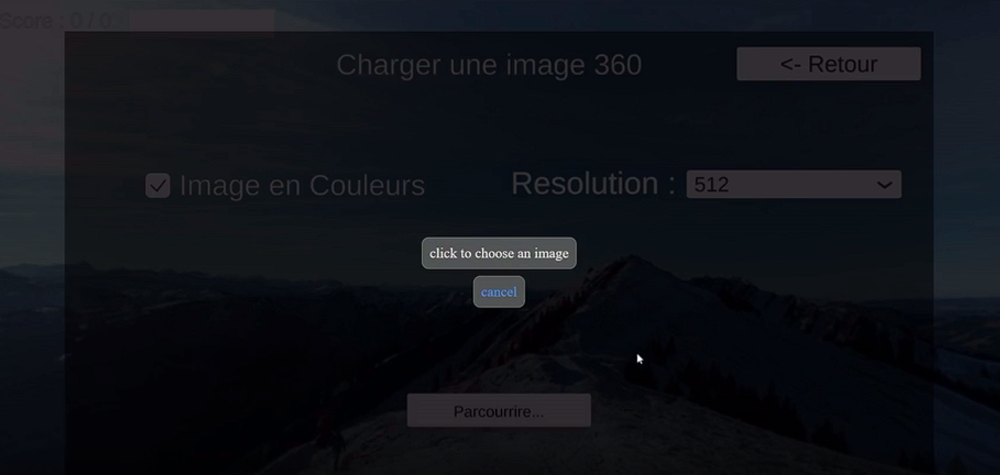
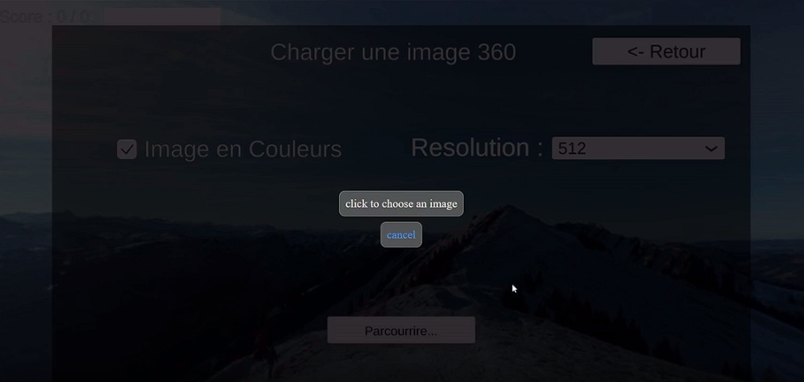
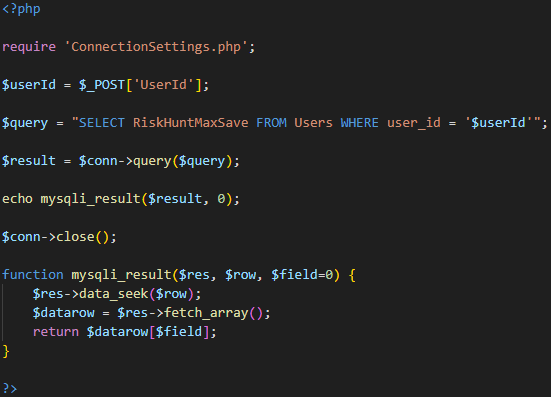
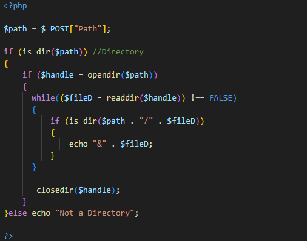

Scénarios :
- Création de scénario
- Stockage Scénario
- Récupération Scénarios
Server/Web :
- Xampp avec Unity
- ServerManager.cs
- Scripts PHP/SQL
- Systeme de compte utilisateur
- Création de compte
- Abonnements
Générale :
- UX
- Autre
- Post Mortem
Riskhunt est le projet que j'ai réalisé en lors de mon alternance en 3ème année à e-artsup l'objectif est de créer un outil pour des formateurs de professionnel.
Le projet est un éditeur de chasse aux risques sur des images 360°,
chaque utilisateur (formateur) peut créer un compte et plus ou moins de scénarios en fonction du niveau de l'abonnement de son compte.
Ils peuvent ensuite partager leurs scénarios avec n’importe qui (les apprenants).
Le projet utilise Unity et PhpMyAdmin et il comporte du C#, PHP, SQL.
Le jeu permet de créer et/ou jouer des scénarios de chasses aux risques, tout le monde peut jouer des scénarios sans se connecter
mais les formateurs ont besoin de se connecter pour en créer.
Chaque scénarios peut avoir plusieurs niveaux, chaque niveau contient une image 360° et une chasse, le scénario et les niveaux ont besoin d'être nomé
lors de la création du niveau on doit d'abhord sélectionner une image en 360° prise sur un lieu de travail avec des dangers sur laquelle la chasse aux risques va se dérouler.
On peut ensuite placer un nombre de points limiter qui représente les risques à trouver et seront soit un texte soit un quiz pour donner plus d'informations sur le risque trouver.
 


Dans les premières versions les scénarios étaient stockés localement sur l'ordinateur.
Mais le but du projet est de partagé ces scénarios c'est pourquoi ils sont stockés dans un serveur dans la version finale pour que plusieurs personne y est accès.

Pour sauvegardés les scénarios une fois créer ils sont transformer et stockés sous la forme d'un dossier
qui contient pour chaque niveau l'image360° et un fichier binaire qui contient les informations des points.
Une fois sauvegarder le joueur obtient un lien/code du scénario qui servira à le partagé.
Pour charger un scénario le jeu à besoin de récuperer un dossier de scénario qui peut venir d'un serveur ou de l'ordinateur,
il peut ensuite convertir ce dossier en une classe Unity C# qui contient toutes les informations pour instancier le scénario
Les utilisateurs qui ont créer un scénario peuvent partagé leurs code ce qui permet de à nimporte qui de charger leurs scénario et le jouer :
Toute cette partie était le plus gros défi technique du projet en plus d'être mon premier projet comportent ces solutions.
Avant de passer d'un fonctionnement locale à serveur pour le stockage de scénario j'ai d'abord utilisé Xampp avec Unity,
Xampp permet de simuler un serveur mais en restant en locale ce qui ma permit de m'assurer du fonctionnement des systems
avant de passer à une version live qui utilise O2Switch.
Xampp et O2Switch utilise PhpMyAdmin ce qui ma permis de me familliarisé avec et avoir une transition plus simple.
je peux faire référence aux deux versions sur le reste cette page.
ServerManager.cs est le script en C# sur Unity qui permet de gérer toutes les interactions avec le serveur qui soit local avec Xampp ou live.
Le script utilise la classe "UnityWebRequest" pour envoyer des requêtes web aux scripts en php.
SetMaxSave :
SetMaxSave permet de définir un nombre de scénarios sauvegarder(newMaxSave) maximum pour un utilisateur spécifique(uId),
comme beaucoup des autres fonctions elle utilise la class WWWForm qui représente une web form qui permet d'envoyer des informations à un script ici SetMaxSave.php.
J'utilise la class UnityWebRequest pour envoyer une requête web du type POST pour envoyer la form générer en haut, le script se chargera de changer la valeur du bon utilisateur dans la base de données.
GetMaxSave :

GetMaxSave est très similaire, elle permet d'obtenir le nombre de sauvegarde maximum d'un utilisateur mais la partie EndWebRequest est plus importante
car elle permet de récupérer la valeur retourné par le script php dans "webRequest.downloadHandler.text" qui est un nombre sous la forme d'un texte.
Cette fonction est appelé à chaque fois qu'un utilisateur upload un scénario.
ServerManager.cs communique avec des scripts PHP stockés sur le serveur,
j'ai appris les bases du language grace à certains des scripts que j'ai récupérés.
SetMaxSave.php :
Ce script permet de définir le nombre de scénarios sauvegarder maximum pour un utilisateur.
"require" permets d'appeler un autre script ici c'est celui qui permet de se connecter à la base de données.
$_POST['Nom'] permets d'obtenir les valeurs contenus dans la web form envoyer depuis Unity, ici je récupére la nouvelle valeur de limite de scénario et l'id de l'utilisateur.
$query est la requête SQL qui va permettre de changer la valeur pour le bon utilisateur.
GetMaxSave.php :

Très similaire à SetMaxSave, mais ne demande pas de valeur mais un ID pour récupérer le nombre de scénarios maximum d'un utilisateur ce qui permet ensuite de les limiter dans Unity.
"echo" permets de renvoyer une valeur à Unity ce qui peut être utilisé pour le debug avec SetMaxSave et qui ici est utilisé pour renvoyer la valeur demander.
GetAllDirectoryInDirectory.php :

Ce script est utilitaire, il permet de récupérer une liste de tous les dossiers dans un dossier en renvoyant leurs chemins séparer par "&"
c'est un script que j'ai réalisé à partir d'autres scripts similaires que j'ai pu trouver sur internet.
Le projet comporte un system de compte utilisateur avec une création de compte login/logout et suppression du compte.
La création du compte est requise pour créer des scénarios et les enregistrer.
Chaque compte peut enregister un nombre limité en fonction de l'abonnement de scénarios.
Création de compte :
L'utilisateur doit fournir un nom d'utilisateur et un mot de passe qui n'ont pas besoin d'être unique,
l'application envoie une requête web à un script en PHP pour créer le compte en l'ajoutant à la base de données et en cryptant le mot de passe.
Login :

Une fois le compte créé l'utilisateur peut s'y connecter avec le nom d'utilisateur et mot de passe.
Les utilisateurs peuvent acheter un abonnement pour une certaine durée afin de :
augmenter le nombre maximum de scénario stocké et de points par niveau maximum et pour pouvoir partager leurs scénarios.
Les abonnements sont limité dans le temps et faire un systeme de timer a été un gros défi technique pour moi :
Timer abonnement
J'ai réaliser de la veille technique qui ma mener à plusieurs solutions complexes j'ai fini par utiliser une solution plus simple :
J'utilise la fonction time() en php qui permet de récuper le temps écouler en seconde depuis le 1er janvier 1970(Unix time).
à chaque session le résultat de time() est sauvegardé pour l'utilisateur et comparer au dernier résultat de time() ce qui permet de calculer la différence et donc le temps écouler
C'est la fonction ManageTimeStamp() qui communique avec TimeDiff.php qui opère cette partie :
L'UX a été une partie importante du projet car le projet vise un public qui n'est par forcément familier avec l'utilisation de jeux vidéos/informatique.
J'ai pu intergrer des conventions dans le projet comme la touche tab pour passer de zone de text à une autre et la touche entrer pour soumettre par exemple dans le menu de login.
Tous au long du jeu il y'a des icones de points d'interogations qui permetent d'afficher une explication de chaque élements en passant la souris dessus
-Boutique :
J'ai utilisé un asset de l'asset store de Unity pour faire la boutique du projet ce qui m’a permis de l'intégrer plus rapidement.
-Paypal :
La boutique du projet fonctionne avec Paypal pour les payements et j'ai pu découvrir et utilisé Paypal développer.
-WebGl :
Le projet à une version bureau et une version WebGl mis sur une page web aussi héberger sur O2Switch ce qui ma poser des problèmes de permissions web.
-Langue :
Le projet à un systeme de language avec un fichier excel qui prend en compte l'anglais et le français.
J'ai énormément appris lors de ce projet en alternance notamment sur la partie web/backend qui ma beaucoup plus
et je pense que les systemes de comptes utilisateurs ont beaucoup de potentiel dans d'autres projets.
Je devais respecter un cahier des charges dans ce projet même si j'avais malgré tous des libertés ce que j'ai apprécié.